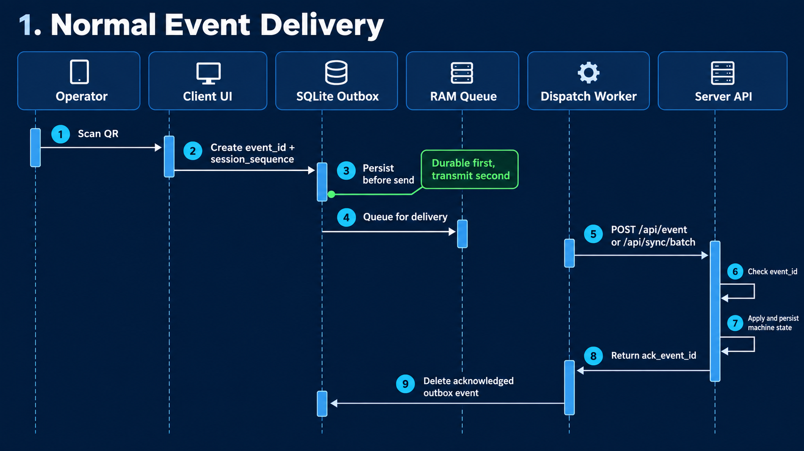
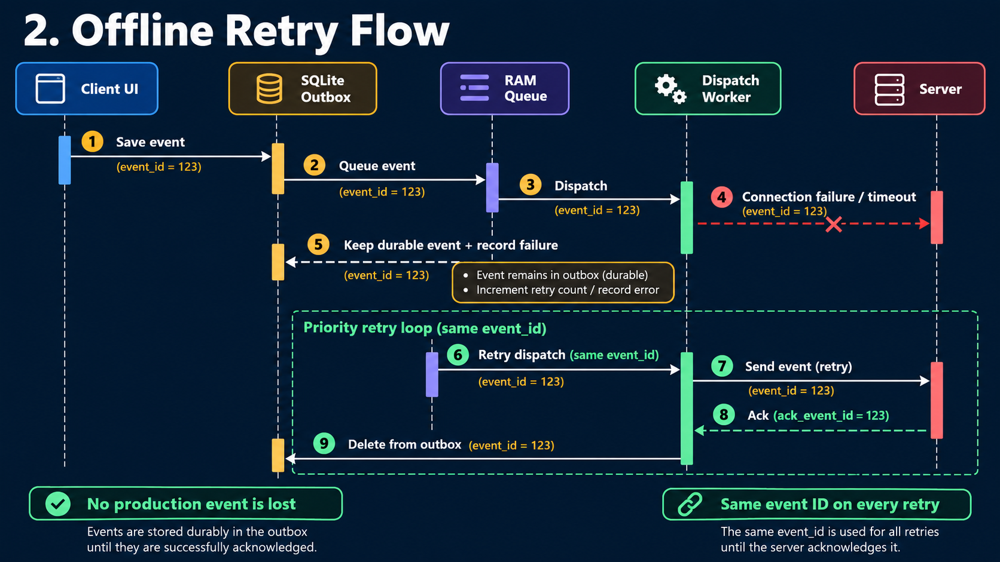
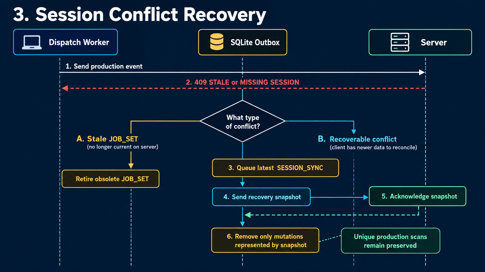
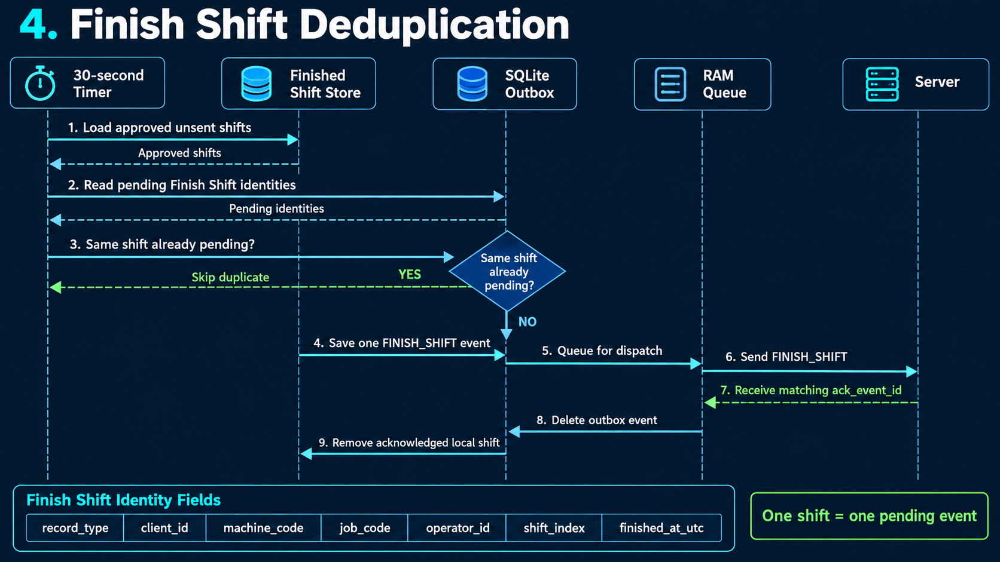

Protocol-2 production events enter the SQLite outbox before entering the in-memory dispatch queue.
Retries reuse the same event_id, allowing the server to acknowledge duplicates safely.
Session snapshots repair server state without deleting unique production events that are not represented.
A stable shift identity prevents the periodic synchronizer from creating repeated Finish Shift events.
1. Normal Event Delivery
A scan is accepted only after its durable event has been written locally. The background worker then sends it without blocking the scanner UI.
Durable first, transmit second.

2. Offline Retry Flow
A connection failure leaves the event in SQLite. Priority retry preserves event ordering and continues using the original event identifier.
No production event is removed because of a network timeout.

ack_event_id.3. Session Conflict Recovery
The server rejects mutations that belong to a stale or missing production session. Obsolete job starts are retired; recoverable sessions receive a prioritized snapshot.
A recovery snapshot prunes only mutations it conclusively represents.

4. Finish Shift Deduplication
The periodic synchronizer compares locally approved shifts with identities already present in SQLite and RAM before creating another event.
One completed shift can have only one pending event.

Queue Reference
| Layer | Responsibility | Removal rule |
|---|---|---|
| SQLite outbox | Crash-safe storage for protocol-2 events. | Matching acknowledgement or conclusive permanent rejection. |
| RAM event queue | Immediate background dispatch; default capacity is 256. | Worker dequeues it; the durable copy remains until acknowledged. |
| Priority retry | Keeps a failed mutation ahead of later events. | Matching acknowledgement, recovery supersession or permanent rejection. |
| Batch sync | Sends compatible ordered production deltas efficiently. | Each row receives its own status and acknowledgement. |
| Processed event IDs | Server-side idempotency history; retains up to 20,000 IDs. | Oldest identifiers age out after the retention limit. |
| Finished Shift store | Owns approved shift records until the server accepts them. | Removed only after Finish Shift acknowledgement. |
Protocol 2
SQLite durability
Stable event IDs
Finish Shift deduplication
Legacy queue compaction